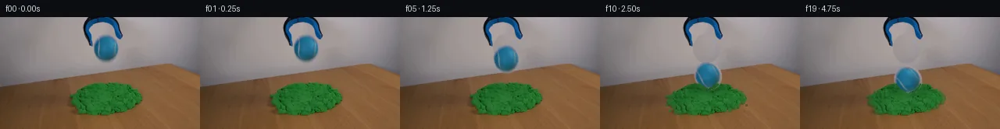

![首帧]()

Round 00
2026-11-04T20:35:14.049036+00:00像素候选变化代码 +269/−0inspection 更新
pixels 5f6d71b158bcfd15 · code 52ec3510498de4b5
查看本轮 generate.py 真实 diff
--- previous/generate.py +++ current/generate.py @@ -0,0 +1,269 @@ +from pathlib import Path + +import numpy as np +from PIL import Image, ImageDraw, ImageFont +from scipy import ndimage + +import artifact_io + + +ROOT = Path(__file__).resolve().parent +W, H = 256, 144 + + +def alpha_over(dst, rgb, alpha, left, top, opacity=1.0): + """Composite an RGB/alpha sprite onto an RGB uint8 array.""" + sh, sw = alpha.shape + x0, y0 = max(0, left), max(0, top) + x1, y1 = min(W, left + sw), min(H, top + sh) + if x1 <= x0 or y1 <= y0: + return + sx0, sy0 = x0 - left, y0 - top + sx1, sy1 = sx0 + (x1 - x0), sy0 + (y1 - y0) + a = np.clip(alpha[sy0:sy1, sx0:sx1] * opacity, 0.0, 1.0)[..., None] + old = dst[y0:y1, x0:x1].astype(np.float32) + new = rgb[sy0:sy1, sx0:sx1].astype(np.float32) + dst[y0:y1, x0:x1] = np.clip(old * (1.0 - a) + new * a + 0.5, 0, 255).astype(np.uint8) + + +def rotate_premultiplied(rgb, alpha, angle): + """Rotate without the dark fringe produced by rotating straight-alpha RGB.""" + a = alpha.astype(np.float32) + premul = rgb.astype(np.float32) * a[..., None] + ra = ndimage.rotate(a, angle, reshape=True, order=1, mode="constant", cval=0.0, prefilter=False) + rp = np.stack( + [ndimage.rotate(premul[..., c], angle, reshape=True, order=1, mode="constant", cval=0.0, + prefilter=False) for c in range(3)], + axis=2, + ) + out = np.zeros_like(rp) + valid = ra > 1e-5 + out[valid] = rp[valid] / ra[valid, None] + return np.clip(out + 0.5, 0, 255).astype(np.uint8), np.clip(ra, 0.0, 1.0) + + +def make_ball_source(source): + # The crop deliberately includes a little wall around the measured ball support. + x0, y0, x1, y1 = 117, 20, 155, 61 + crop = source[y0:y1, x0:x1].copy() + yy, xx = np.mgrid[y0:y1, x0:x1] + radial = np.sqrt(((xx - 136.0) / 17.0) ** 2 + ((yy - 40.0) / 18.2) ** 2) + alpha = np.clip((1.055 - radial) / 0.09, 0.0, 1.0).astype(np.float32) + return crop, alpha, (x0, y0, x1, y1) + + +def erase_held_ball(source, ball_alpha, crop_box): + """Construct the wall revealed when the ball leaves, from same-row local RGB samples.""" + clean = source.copy() + x0, y0, x1, y1 = crop_box + fill = np.zeros((y1 - y0, x1 - x0, 3), dtype=np.float32) + for ly, y in enumerate(range(y0, y1)): + for lx, x in enumerate(range(x0, x1)): + # Both samples are well outside the grabber support. Their blend retains + # the wall's left-to-right illumination and low-amplitude texture. + left_rgb = source[y, x - 55].astype(np.float32) + right_rgb = source[y, x + 55].astype(np.float32) + u = lx / max(1, (x1 - x0 - 1)) + fill[ly, lx] = left_rgb * (1.0 - u) + right_rgb * u + a = ball_alpha[..., None] + patch = source[y0:y1, x0:x1].astype(np.float32) + clean[y0:y1, x0:x1] = np.clip(patch * (1.0 - a) + fill * a + 0.5, 0, 255).astype(np.uint8) + return clean + + +def add_ball_shadow(frame, sand_mask, cx, cy, contact_amount): + yy, xx = np.mgrid[0:H, 0:W] + proximity = np.clip((cy - 40.0) / 40.0, 0.0, 1.0) + sx = 25.0 - 7.0 * proximity + sy = 6.0 - 1.5 * proximity + # The shadow sits on the mound's crown and becomes smaller/darker near contact. + g = np.exp(-0.5 * (((xx - (cx + 2.0)) / sx) ** 2 + ((yy - 91.0) / sy) ** 2)) + strength = 0.025 + 0.16 * proximity + 0.055 * contact_amount + a = (g * strength * sand_mask)[..., None] + shaded = frame.astype(np.float32) * (1.0 - a) + # Preserve a little green bounce instead of shading toward neutral black. + shaded[..., 1] += 4.0 * a[..., 0] + frame[:] = np.clip(shaded + 0.5, 0, 255).astype(np.uint8) + … diff truncated; 182 more lines …